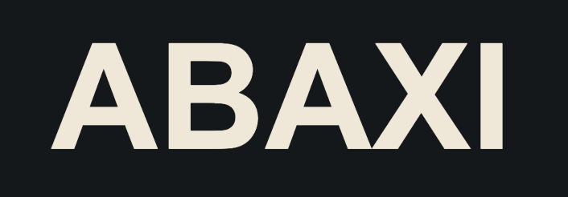
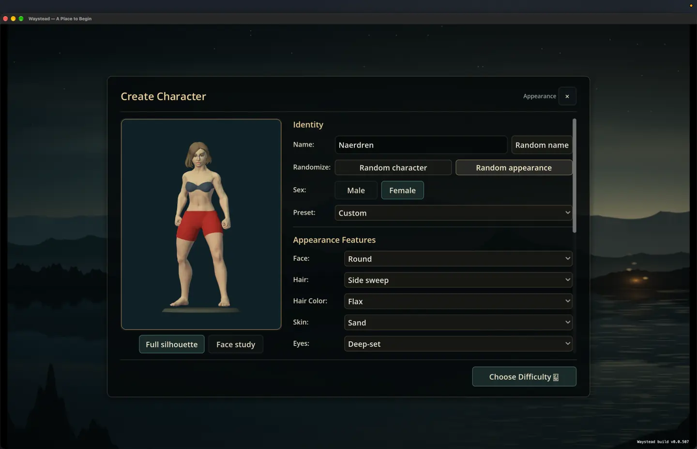
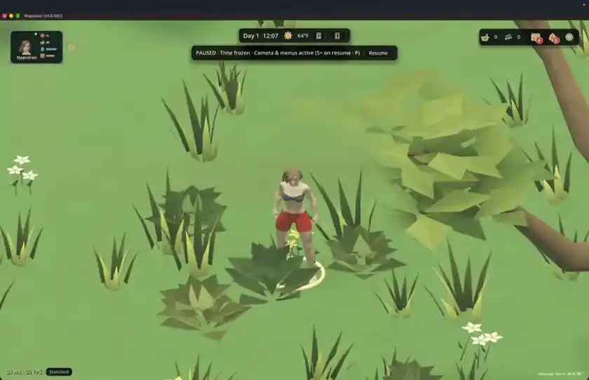
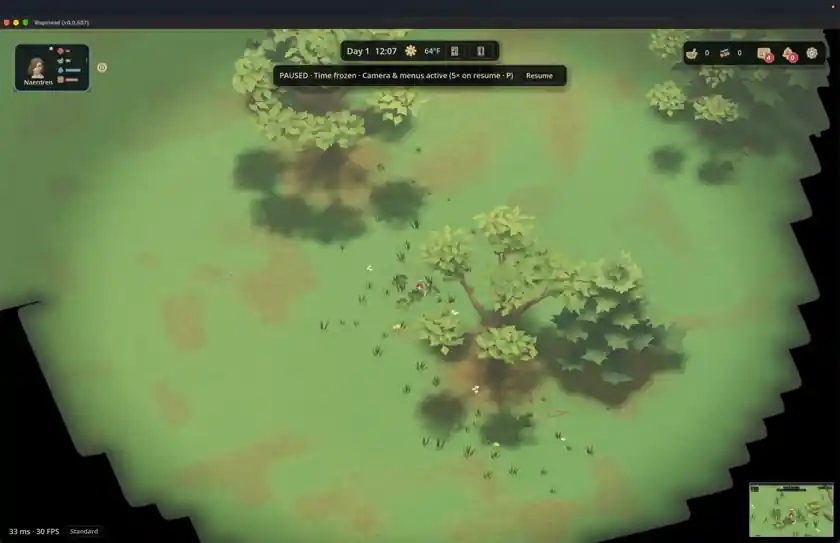
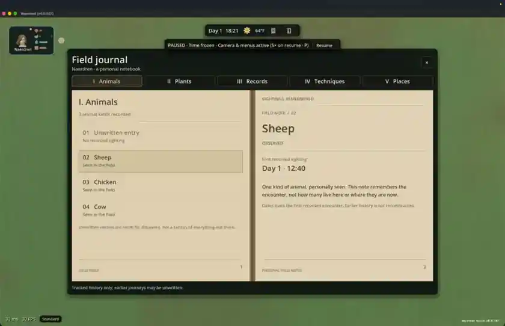

STEP 1 · CHECK REJECTED
Failed candidate ed086de6
decapod validate ran authorization-contract and exited 1 because an ungranted member still passed a repository read check.
Local-first governance kernel · Harness AI metacognition
Keep Codex, Claude Code, Cursor, Antigravity, or Pi. Your coding agents call Decapod locally to claim work, isolate branches, enforce repository boundaries, and bind check evidence to exact commits. Daemonless, free forever locally, and ready in one command.
cargo binstall decapod && decapod init
Requires cargo-binstall (or switch to Cargo source). Initializes .decapod/ once per repo—then tell your agent what to build.
01 / OBSERVED HISTORICAL RUN · PI 0.73.1 + DECAPOD 0.148.8
Model confidence is not completion evidence. In this recorded run, Pi received one prompt and zero follow-up help—hit an actual authorization test failure, repaired the source, passed fresh checks, and published GitHub PR #7.
STEP 1 · CHECK REJECTED
ed086de6decapod validate ran authorization-contract and exited 1 because an ungranted member still passed a repository read check.
STEP 2 · SOURCE REPAIR
a063de90Pi inspected the failure output, patched repository-scoped read authorization, and re-ran validation with 2/2 checks exiting 0.
STEP 3 · RECORDED ADMISSION
ada3eb89Decapod recorded the commit-bound receipt and created PR #7. Later source edits expire that proof—and admission never forces merge.
Selected moments from historical Pi session pi-1758-tui-06 at original tool speed. Every hash and artifact below is verifiable offline.
02 / HOW IT WORKS WITH EXISTING AGENTS
You don’t switch editors or give up Claude Code, Codex, Cursor, or Antigravity. When your agent starts a task, it acquires a Decapod session, claims work, isolates a Git branch/worktree, checks its own specs and risks, and runs configured validation before proposing a PR.
Every call executes locally and exits cleanly—no background daemon required, while durable state lives right beside your repository.
Read the architecture & mental model ↗Todos, specs, decisions, and recovery state survive across restarts and handoffs.
Main stays clean via isolated worktrees; protected authority gates fail closed.
Validation receipts bind to the exact candidate SHA and accepted target base.
Mix coding agents on the same repository through one CLI and structured RPC.
03 / PARALLEL MULTI-AGENT COORDINATION (INTERNAL WORKFLOW)
Internal development workflow shown in three concurrent Ghostty + Antigravity CLI sessions on November 18, 2026: separate workers claim non-overlapping tasks, isolate branches, revalidate after upstream merges, and pass independent verification.
Parallel issue work, revalidation after upstream merges, and independent verification.
Internal engineering sessions (not third-party customer endorsements). Each instance runs in its own isolated Decapod worktree.
04 / HOW COMPLETION IS JUDGED
Decapod does not declare success because an agent sounded confident. It separates what your configured checks actually verified from what remains outside automated scope.
05 / LOCAL FOREVER VS. TEAM CLOUD
There are no artificial rate limits, local seat caps, or forced logins on the open local kernel. Choose Cloud only when multiple engineers or shared repositories need hosted custody and seat management.
$0 · MIT/Apache local kernel
Run Decapod directly inside any Git repository with Codex, Claude Code, Cursor, Antigravity, or Pi.
decapod validate gates.$50/mo or $552/yr per human-repo unit
Start at 1 repository × 1 contributor ($50/mo, or $552/yr with an 8% annual discount). Every Cloud seat includes:
06 / DEEPER REFERENCE & SHOWCASES
Ready to dig past the overview? Expand the 14 governed capabilities, inspect the Waystead game-development showcase, watch the introductory film, or read The End of Continuous Rework ↗.
Create, claim, prioritize, hand off, and complete work with an explicit owner and recorded outcome.
Task lifecycle ↗ 02 / CONSTITUTIONEngineering defaults and curated architecture/delivery doctrine embedded directly in the kernel.
Explore the Constitution ↗ 03 / INTENTKeep original user intent and the agent’s source-grounded interpretation in versioned repository specs.
Intent & decisions ↗ 04 / CONTEXTResolve relevant project rules and task constraints with traceable provenance.
Agent-first architecture ↗ 05 / WORKSPACESGive every task its own branch and isolated Git worktree, with optional container boundaries.
Workspace model ↗ 06 / CONCURRENCYCodex, Claude Code, Cursor, and Antigravity coordinate in one project via task claims and handoffs.
Multi-agent workflows ↗ 07 / MEMORYPreserve context across ephemeral sessions, engineers, and tool transitions.
Persistent context ↗ 08 / BOUNDARIESMake repository rules, ownership, and approval gates explicit before work runs.
Bounded execution ↗ 09 / VALIDATIONRun configured checks, inspect failures cleanly, repair root causes, and revalidate.
Proof & validation ↗ 10 / EVIDENCEBind check outputs to the exact repository state and base commit that produced them.
Proof contracts ↗ 11 / DELIVERYBlock PR publication until required checks, specs, and authority criteria pass.
Delivery workflow ↗ 12 / HISTORYPreserve the chain from original intent and assumptions to decisions, checks, and receipts.
Artifact inventory ↗ 13 / RUNTIMERuns when an agent calls it, returns structured output, and exits with zero lingering daemons.
Mental model ↗ 14 / INTERFACEAgents call one unified surface for orientation, claims, reflection, and validation.
Agent API ↗INTERNAL / RELATED DEVELOPMENT EXAMPLE (NOT A CUSTOMER ENDORSEMENT)
Waystead is an active procedurally generated Godot survival RPG spanning world generation, inventory, persistence, and rendering. Decapod coordinates agents across subsystems without losing ownership or validation boundaries.








01 / 07 · IN DEVELOPMENT
Character creation, appearance, identity, and the start of a personal journey.
INTRODUCTORY FILM
Short animated introduction to Decapod’s metacognitive governance thesis. Loads only when played.
Keep your agents. Keep the evidence. Read the full thesis or start locally now.